조경산업기사 (2020-06-06 기출문제)
1과목: 조경계획 및 설계
1. 중국 정원에서 포지(鋪地)의 수법은 어느 때부터 전해져 내려오는가?
- 진나라
- 송나라
- 당나라
- 한나라
(정답률: 61%)

2. 경주 황룡사를 중심으로 방위와 산의 연결이 틀린 것은?
- 동쪽-명활산
- 서쪽-선도산
- 남쪽-황룡산
- 북쪽-소금강산
(정답률: 82%)
3. 옥녀산발형(玉女散發型)의 풍수 형국을 보이는 옵성은?
- 정의읍성
- 해미읍성
- 고창읍성
- 낙안읍성
(정답률: 60%)
4. 남송(南宋)시대 30여개소 명원(名闧)을 소개한 정원서는?
- 원야
- 낙양명원기
- 오흥원림기
- 장물지
(정답률: 57%)
5. 페르시아의 회교식 정원에서 도입되는 정원의 핵심시설이 아닌 것은?
- 커넬(Canal)
- 토피어리
- 분천(噴泉)
- 저수지
(정답률: 67%)
6. 무굴인도의 샤-자한 시대에 조성된 작품은?
- 니샤트-바그(Nishat Bagh)
- 샤리마르-바그(Shalimar Bagh)
- 아차발-바그(Achabal Bagh)
- 체하르-바그(Tshehar Bagh)
(정답률: 75%)
7. 문헌에 나타난 고려시대 기홍수의 원림(園林)을 설명한 것으로 옳지 않은 것은?
- 이규보의 문집인 “동국이상국집”에 전한다.
- 곡지를 만들고 꽃을 심어 선선정원으로 조성했다.
- 버드나무, 소나무, 자두나무, 모란 등의 목본 식물과 창포를 식재했다.
- 퇴식재 팔영의 제6영인 연의지(連漪地)는 장방지(長方地)이다.
(정답률: 78%)
8. 일본 평성궁 동원의 곡수유구에 관한 설명으로 가장 거리가 먼 것은?
- 바닥에 목상을 묻고 계정 수초를 심어 꽃을 감상했다.
- 조영 시기는 나라시대 중기로 추정된다.
- 자연석에 홈을 파서 유배거로 사용하였다.
- 지중에는 경사가 있는 암도(岩島)를 배치한다.
(정답률: 60%)
9. 환경에 영향을 미치는 계획을 수립할 때에 환경 보전계획과의 부합 여부 확인 및 대안의 설정ㆍ분석 등을 통하여 환경적 측면에서 해당 계획의 적정성 및 입지의 타당성 등을 검토하여 국토의 지속가능한 발전을 도모하는 것은?
- 환경영향평가
- 토지적성평가
- 전략환경영향평가
- 소규모환경영향평가
(정답률: 63%)
10. 공원관리청이 아닌 자의 공원사업 시행 및 공원 시설의 관리 중 ()에 해당되는 것은?
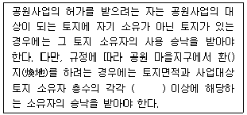
- 2분의 1
- 3분의 1
- 3분의 2
- 4분의 3
(정답률: 77%)
11. 조경계획의 접근방법 중 물리적 자원 혹은 자연자원의 레크레이션의 유형과 양을 결정하는 접근방법은?
- 경제 접근법(economic approach)
- 자원 접근법(resource approach)
- 활동 접근법(activity approach)
- 행태 접근법(behavioral approach)
(정답률: 78%)
12. 그리스인들이 일상 생활을 영위하는 도로와 생활 공간 등을 계획할 때, 효용과 기능의 측면에서 추구하였던 사항이 아닌 것은?
- 지형조건에 맞게
- 기능에 충실하게
- 즐겁고 편안하게
- 호화롭게
(정답률: 84%)
13. 다음 ()에 포함되지 않는 것은?
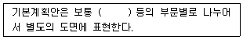
- 식재계획
- 토지이용계획
- 교통동선계획
- 레크레이션계획
(정답률: 73%)
14. 종래의 스타일과는 달리 녹음이 많은 우수한 환경위에 인구가 모이고 산업이 성립되어 형성된 도시는?
- 메가로폴리스형 도시
- 메트로폴리스형 도시
- 에페로폴리스형 도시
- 리비에라형 도시
(정답률: 57%)
15. 그림과 같이 화살표 방향이 정면일 경우 우축 면도로 가장 적합한 투상도는?
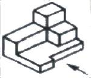
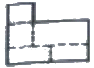
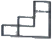
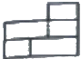
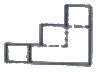
(정답률: 73%)
16. 시각 디자인에 관련되는 착시(錯視)에 대한 다음의 설명 중 가장 거리가 먼 것은?
- 우리 눈은 예각은 크게, 둔각은 작게 보는 경향이 있다.
- 동일한 도형을 상하로 두면 위쪽이 아래쪽보다 커 보인다.
- 피로하거나 시신경에 이상이 있을 때 눈의 착시 현상이 생긴다.
- 눈의 착각 현상을 역이용하여 착각교정을 함으로써 시각적으로 훌륭한 구조물을 만들 수 있다.
(정답률: 76%)
17. 혼합되는 각각의 색 에너지(energy)가 합쳐져서 더 밝은 색을 나타내는 혼합은?
- 가산혼합
- 감산혼합
- 중간혼합
- 색료혼합
(정답률: 86%)
18. 공장조경 계획 시 공장 부지나 건물에 다음 시설의 설치 목적은?
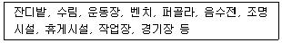
- 환경개선
- 환경미화
- 환경보호
- 환경보존
(정답률: 77%)
19. 다음 중 조경설계기준 상의 휴게시설 설계와 관련된 설명으로 가장 거리가 먼 것은?
- 휴게시설은 각 시설별로 본래의 설치목적에 부합되도록 설계하며, 복합적인 기능을 갖는 경우 본래의 기능을 먼저 충족시키도록 한다.
- 시설의 형태는 표준화된 형태 또는 조형적인 형태로 할 수 있으며, 조형적인 형태로 설계 할 경우 이 설계기준을 적용하지 아니할 수 있다.
- 목재의 경우 보의 단면은 폭과 높이의 비를 1/3~1/5로 하고, 기둥은 좌굴현상을 고려하여 좌굴계수(재료의 허용압축응력×단면적÷압축력)는 4를 적용하며, 세장비(좌굴장/최소단면 2차 반경)는 250 이하를 적용한다.
- 휴게시설은 연속ㆍ시설간의 조합에 의해 미적 효과를 얻을 수 있도록 하며, 통합 이미지를 연출하기 위하여 CI(Cooperation Identity)를 적용할 수 있다.
(정답률: 63%)
20. 가시도(可視度)가 가장 높은 배색(配色)은?
- 백색 바탕에 검정색 형상
- 황색 바탕에 녹색 형상
- 황색 바탕에 청색 형상
- 검정색 바탕에 황색 형상
(정답률: 76%)
2과목: 조경식재
21. 여름철 기식화단(assorted flower bed)에 적당한 초화류를 키가 큰 식물에서 작은 식물순으로 나열된 것은?
- 채송화→해바라기→튤립
- 칸나→다알리아→글라디올러스
- 나팔꽃→페튜니아→물망초
- 백일홍→샐비어(조생종)→페튜니아
(정답률: 62%)
22. 봄철 수목의 화아분화를 지배하는 가장 중요한 체내성분은 무엇인가?
- 질소화합물과 유기산의 비율
- 지질과 탄수화물의 비율
- 질소화합물과 탄수화물의 비율
- 유기산과 지질의 비율
(정답률: 61%)
23. 생태계의 공생과 관련된 설명이 틀린 것은?
- 중립:두 종간에 어떠한 영향을 주지도 받지도 않는다.
- 종내경쟁:서로 다른 두 생물종이 서로에게 피해를 준다.
- 상리공생:서로 또는 모두에게 유리하거나 도움이 된다.
- 편리공생:한쪽은 분리하고 다른 쪽은 이해관계가 없다.
(정답률: 70%)
24. 한국잔디의 일반적인 생육 특징이 틀린 것은?
- 최적의 pH는 5.5~6.5정도이다.
- 난지형 잔디로 여름철에 잘 자란다.
- 불환전 포복경이지만 포복력이 강한 포복경을 지표면으로 강하게 뻗는다.
- 호광성 잔디로 양지에서는 잘 생육되나 그늘에서는 생육이 매우 느린 단점이 있다.
(정답률: 63%)
25. 다음 중 상록성인 식물은?
- 모과나무(chaenmeles sinensis)
- 채진목(Amelanchier asiatica)
- 산사나무(Crataegus pinnatifida)
- 비파나무(Eriobotrya japonica)
(정답률: 64%)
26. 식물의 식재 및 사후관리에 관한 설명으로 옳은 것은?
- 구덩이의 크기는 분크기의 1.5배 정도로 파고 밑바닥에는 부엽토 등을 적당량 섞고 넣어준다.
- 수목식재는 가능한 본래 식재되었던 방향의 반대방향으로 원래 묻혔던 깊이보다 조금 높게 식재한다.
- 이식하는 나무의 뿌리가 많이 잘렸을 경우에는 지상부의 가지와 잎은 가능한 한 떨어지지 않도록 주의한다.
- 뿌리의 발생이 좋지 못한 나무들이나 노거수 등은 뿌리돌림을 할 경우 활착이 어려우므로 분을 떠서 이식하는 것이 좋다.
(정답률: 53%)
27. 다음 보기의 ‘이것’에 해당하는 것은?
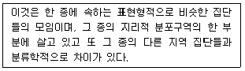
- 변종
- 아종
- 지역종
- 단형종
(정답률: 61%)
28. 식재계획의 배식원리 중 자유식재에 해당하는 것은?
- 비대칭적 균형식재, 사실적 식재가 기본형이다.
- 식재의 기본 양식은 교호식재, 집단식재, 열식 등이다.
- 사례로는 아메바형, 절선형, 번개형 식재가 있다.
- 자연풍경과 유사한 경관을 재현하는 식재 방법이다.
(정답률: 52%)
29. 어떤 수목을 이식하고자 다음 그림과 같이 분을 뜰 때 ㉠, ㉡, ㉢, ㉣에 맞는 항은 어떤 것인가? (단, 일반적 수종으로 보통분일 경우)
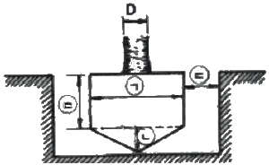
- ㉠: 4D, ㉡:D, ㉢:2D, ㉣:2D
- ㉠: 5D, ㉡:2D, ㉢:2D, ㉣:3D
- ㉠: 4D, ㉡:2D, ㉢:3D, ㉣:2D
- ㉠: 6D, ㉡:3D, ㉢:3D, ㉣:4D
(정답률: 75%)
30. 다음 중 비비추(Hosta Iongipes)의 특성으로 틀린 것은?
- 붓꽃과이다.
- 잎은 근생하며 두껍다.
- 개화기는 7~8월에 연보라색 꽃이 핀다.
- 열매는 삭과로 긴 타원형이며, 9월에 결실한다.
(정답률: 54%)
31. 연속된 형태를 이룬 식물재료들 가운데 갑작스러운 변화를 주어 관찰자의 시선을 집중 시키는 식재 기법은?
- 강조
- 균형
- 연속
- 통일
(정답률: 86%)
32. 보통명(common name)은 습성, 특징, 산지, 용도, 전설, 왜래어 등에서 유래되어 비롯된다. 다음 중 수목명이 나무의 특징을 반영한 것이 아닌 것은?
- 생강나무
- 주목
- 물푸레나무
- 너도밤나무
(정답률: 69%)
33. 다음 중 열매의 형태가 시과(samara:翅果)에 해당되는 수종은?
- 참느릅나무(Ulmus parvifolia)
- 윤노리나무(Pourthiaea villosa)
- 층층나무(Cornms controversa)
- 산벚나무(Prunus sargentii)
(정답률: 56%)
34. 임해매립지에서 바닷물이 튀어 오르는 곳에 식재하기 알맞은 지피식물로 구성된 것은?
- 눈향나무, 다정큼나무
- 섬쥐똥나무, 유카
- 버뮤다그라스, 잔디
- 사철나무, 유엽도
(정답률: 64%)
35. 다음 중 잎의 질감이 상대적으로 고운 수종은?
- 자귀나무(Albizia julibrissin)
- 오동나무(Paulownia coreana)
- 벽오동(Firmiana simplex)
- 일본목련(Magnolia obovata)
(정답률: 69%)
36. 군락(群落)식재를 실시할 때 가장 우선적으로 고려해야 할 사항은?
- 현존 모델 식생이 자연식생인지 대상식생인지를 파악한다.
- 모암이 모슨 토양인지 표층토의 상태를 파악한다.
- 기후에 따라 미기후, 소기후, 증기후, 대기후로 나누어 파악한다.
- 인간에 의한 벌목, 풀베기, 경작 등의 상태를 파악한다.
(정답률: 71%)
37. 다음 보기의 식물 분류에 해당되는 것은?
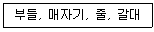
- 부유식물
- 정수식물
- 침수식물
- 부엽식물
(정답률: 74%)
38. 다음 중 바람에 대한 저항성인 내풍력이 약한 수종은?
- 가시나무(Quercus myrsinaefolia)
- 느티나무(Zelkova serrate)
- 아까시나무(Robinia pseudoacacia)
- 졸참나무(Quercus serrata)
(정답률: 56%)
39. 다음 중 능수버들, 은사시나무, 이태리포푸라의 공통적인 특징은?
- 암수딴그로이다.
- 충매화 수종이다.
- 종모가 날린다.
- 우리나라 자생종이다.
(정답률: 65%)
40. 꽃이 무성화로만 이루어진 수종은?
- 수국(Hydrangea macrophylla)
- 돈나무(Pittosporum tobira)
- 나무수국(Hydrangea paniculata)
- 백당나무(Viburnum opulus var, calvescens)
(정답률: 62%)
3과목: 조경시공
41. 경사도(gradient)에 대한 설명이 틀린 것은?
- 25%의 경사는 1:4이다.
- 100%의 경사도는 45°의 각을 갖는다.
- 1:2의 경사는 수평거리 1m에 수직거리 2m이다.
- 보통 토질에서 성토(盛土)의 경사는 1:1.5로 한다.
(정답률: 64%)
42. 벽에 침투하는 빗물에 의해서 모르타르 중의 석회분이 공기 중의 탄산가스와 결합하여 벽돌이나 조직 벽면에 흰가루가 돋는 현상은?
- 백화현상
- 레이턴스
- 히빙현상
- 수화열
(정답률: 83%)
43. 조경시설의 내구성에 대한 설명으로 가장 거리가 먼 것은?
- 재료가 산, 알칼리, 염류, 기름 등의 작용에 저항하는 성질을 내구성이라고 한다.
- 비와 눈, 추위와 더위, 햇빛은 노후화의 원인이 된다.
- 구조물의 내구성은 시간, 기능, 그리고 비용이 고려된 성능이다.
- 조경시설물은 외부공간에 노출되므로 상대적으로 내구성능이 조기에 낮아질 우려가 있다.
(정답률: 63%)
44. 다음 건설 기계류 중 주작업 용도가 “운반용”인 기계로만 짝지어진 것은?
- 리퍼-램머
- 로더-백호우
- 진동콤팩터-탬핑롤러
- 텀프트럭-벨트컨베이어
(정답률: 80%)
45. 그림과 같은 수준측량 결과에 따른 B점의 지반고는? (단, A점의 지반고는 30m이다.)
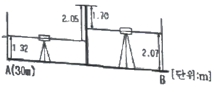
- 28.90m
- 29.60m
- 33.74m
- 37.14m
(정답률: 55%)
46. 다음 중 공사현장에 항시 비치하고 있어야 하는 ‘해당공사에 관한 서류’에 해당되지 않는 것은?
- 천후표
- 품셈표
- 계약문서
- 공사예정공정표
(정답률: 60%)
47. 실시설계 도면을 기준으로 1.0B 붉은 벽돌쌓기에 필요한 정미수량이 300장이라 한다. 이에 운반, 저장, 가공, 시공과정에서 발생하는 순실량을 예측하여 부가한다면 총 소요량은 몇 잘인가?
- 330장
- 315장
- 309장
- 303장
(정답률: 58%)
48. 다음의 설명에 적합한 공사계약 방식은?
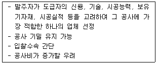
- 지명경쟁입찰
- 턴키입찰
- 수의계약
- 대안입찰
(정답률: 69%)
49. 어린이놀이터 등에 사용되는 금속의 부식을 최소화하기 위한 유의사항으로 가장 거리가 먼 것은?
- 부분적으로 녹이 나면 즉시 제거할 것
- 가능한 한 이종(異種) 금속을 인접 또는 접촉시켜 사용할 것
- 균질한 것을 선택하고 사용 시 큰 변형을 주지 않도록 할 것
- 큰 변형을 준 것은 가능한 한 풀림(annealing)하여 사용할 것
(정답률: 73%)
50. 옥외계단 설치 시 주의할 사항으로 가장 거리가 먼 것은?
- 계단의 재료 선택은 마모되지 않는 것이 유리하나 주의의 경관을 고려해야 한다.
- 화강석 계단은 고저차가 없고, 안쪽으로 경사지게 설치해야 한다.
- 단 높이(R)와 너비(T)의 경우에는 2R+T=60~65cm를 유지하되 전 구간에 걸쳐 동일하여야 한다.
- 계단이 길 경우에는 반드시 참을 두어야 하며 참의 폭은 계단의 높이에 따라 설계하도록 한다.
(정답률: 63%)
51. 다음 함과 모멘트에 대한 설명이 틀린 것은?
- 모멘트의 단위는 kgㆍm, tㆍm이며, 기호는 M이다.
- 모멘트의 크기는 힘의 크기(P)에 힘까지의 거리(a)를 곱한 것을 말한다.
- 모멘트의 부호는 모멘트의 회전방향이 시계방향일 때는 (-), 반시계 방향일 때는 (+)로 한다.ㅣ
- 크기가 작고 작용선이 평행하여, 방향이 반대인 한 쌍의 힘을 우력(偶力)이라 한다.
(정답률: 80%)
52. 축척 1:50000 지형도에서 3% 기울기의 노선을 선정하려면 이 노선상의 주곡선 간도상 거리는? (단, 주곡선 간격은 20m임)
- 7.5mm
- 10.6mm
- 13.3mm
- 20.4mm
(정답률: 42%)
53. 내열성이 크고 발수성을 나타내어 방수제로 쓰이며, 저온에서도 탄성이 있어 gasket, packing의 원료로 쓰이는 합성수지는?
- 페놀수지
- 실리콘수지
- 에폭시수지
- 폴리에스테르수지
(정답률: 57%)
54. 석재의 성질 중 장점에 해당하는 것은?
- 불연성이다.
- 일반적으로 가공이 곤란하다.
- 화열에 닿으면 강도가 없어진다.
- 인장강도가 압축강도의 1/10~1/20 정도이다.
(정답률: 71%)
55. 골재의 함수상태 중 기건상태를 나타내는 것은?
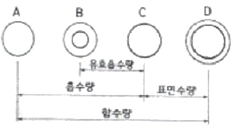
- A
- B
- C
- D
(정답률: 62%)
56. 공원에서 클레이코트 테니스장을 만들 때 표면에 소금을 뿌렸다. 그 이유는 무엇인가?
- 표면의 배수를 용이하게 하기 위해
- 흙이 뭉치는 것을 방지하기 위해
- 테니스장의 답압에 견디는 강도를 높이기 위해
- 테니스장의 기층과 표면층과의 분리를 방지하기 위해
(정답률: 61%)
57. 콘크리트 공사에서 사용되는 혼화재료 중 혼화제에 속하지 않는 것은?
- 방청제
- 감수제
- 플라이애시
- AE제(공기연행제)
(정답률: 51%)
58. 공사간격의 구성 요소 중 “직접공사비”를 계산하기 위해 필요한 세부항목에 해당되지 않는 것은?
- 일반관리비
- 재료비
- 경비
- 외주비
(정답률: 61%)
59. 다음 중 한중콘크리트에 대한 설명으로 가장 거리가 먼 것은?
- 특별한 보온조치는 취하지 않아도 된다.
- 한중콘크리트에는 공기연행 콘크리트를 사용하는 것을 원칙으로 한다.
- 하루의 평균기온이 4℃ 이하가 예상되는 조건일 때 한중콘크리트를 시공하여야 한다.
- 양생종료 후 따뜻해 질 때까지 받는 동결 융해 작용에 대하여 충분한 저항성을 가지게 한다.
(정답률: 67%)
60. 다음 중 체적계산에 대한 설명으로 가장 거리가 먼 것은?
- 단면이 불규칙할 때에는 플래니미터를 이용한다.
- 비교적 규칙적인 때에는 수치계산법을 활용한다.
- 계산 방법에는 단면법, 점고법, 등고선법 등이 있다.
- 단면이 규칙적인 때에는 도해법을 활용한다.
(정답률: 60%)
4과목: 조경관리
61. 토양 중 유기물 함량이 3.40%, 질소 함량이 0.19%일 때 탄질비는 약 얼마인가? (단, 유기물의 탄소함량은 58%이며, 최종 계산결과 소수점 둘째자리에서 반올림)
- 12.0
- 10.9
- 10.4
- 9.8
(정답률: 45%)
62. 다음 중 직영방식의 장점이 아닌 것은?
- 긴급한 대응이 가능하다.
- 관리책임이나 책임의 소재가 명확하다.
- 이용자에게 양질의 서비스가 가능하다.
- 규모가 큰 시설 등의 관리를 효율적으로 할 수 있다.
(정답률: 67%)
63. 포장공사에서 토사포장의 보수 및 시공방법 중 개량방법에 해당되지 않는 것은?
- 지반치환공법
- 노면치환공법
- 표면처리공법
- 배수처리공법
(정답률: 40%)
64. 엽면시비에 관한 설명 중 틀린 것은?
- 이식 후나 뿌리가 장해를 받았을 경우에 실시한다.
- 비료의 농도는 가급적 진하게 하고 한 번에 충분한 양이 효과적이다.
- 약액이 고루 부착되도록 점착제를 사용함이 효과적이다.
- 살포 시기는 한낮을 피해 맑은 날 아침이나 저녁때가 적합하다.
(정답률: 77%)
65. 세균이 식물에 침입하는 방법이 아닌 것은?
- 각피 침입
- 피목 침입
- 밀선 침입
- 상처 침입
(정답률: 50%)
66. 천막벌레나방(텐트나방)의 설명이 틀린 것은?
- 벚나무, 장미류, 버드나무 등 거주범위가 넓다.
- 애벌레는 이른 봄 실을 토해 만든 거미줄 집 안에서 군집생활을 하고 잎을 갉아먹는다.
- 1년에 2회 발생하며, 노숙유충으로 땅속에서 고치 상태로 겨울을 난다.
- 유충 발생 초(4월 하순)에 클로르푸루아주론 유제(5%) 2000배액을 수관 살포한다.
(정답률: 66%)
67. 시비와 관련된 설명 중 옳지 않은 것은?
- 수경수목의 시비는 수종과 크기를 고려하여 비료의 종류와 시비량 및 시비횟수를 결정한다.
- 잔디 초종을 고려하여 연간 시비량을 결정하며, 비료의 종류는 N:P2OS:K2O이 3:1:2 또는 2:1:1의 비율이 되도록 한다.
- 화단 초화류는 집약적 관리가 요구되므로 가능한 한 무기질비료를 추비로서 연간 2~3회, 화학비료를 기비로서 연간 1회 시비한다.
- 일반 조경수목류의 기비는 유기질 비료를 늦가을 낙엽 후 땅이 얼기 전 또는 2월 하준~3월 하준의 잎이 피기 전에 연 1회를 기준으로 시비한다.
(정답률: 59%)
68. 질병 가능성(disease potential)이 가장 높은 잔디의 종류는?
- Creeping bentgrass
- Fine fescue
- Kentucky bluegrass
- Tall fescue
(정답률: 55%)
69. 동력예초기로 제초 작업을 하는 경우 개인보호구로 적절하지 않은 것은?
- 보안경
- 안전화
- 방독마스크
- 방진 장갑
(정답률: 73%)
70. 콘크리트 소재의 시설물 균열부에 대한 보수방법으로 부적합한 것은?
- 표면실링(sealing)공법
- V자형 절단 공법
- 고무(gm)압식 공법
- 그라우팅공법
(정답률: 52%)
71. 토양에서 일어나는 질소순환작용 중 가스형태로의 질소 손실과 관련 있는 것은?
- 탈질작용
- 부동화작용
- 질산화작용
- 암모니아작용
(정답률: 56%)
72. 다음 중 인공적 수형을 만들기 위하여 정지, 전정하는 수종으로 부적합한 것은?
- 회양목, 사철나무
- 무공화, 쥐똥나무
- 벚나무, 단풍나무
- 향나무, 측백나무
(정답률: 68%)
73. 가로수의 수목보호 홀 덮개의 기능이 아닌 것은?
- 병해충의 방지
- 뿌리보호
- 토양 답압 방지
- 도시미관의 증진
(정답률: 60%)
74. 노거 수목의 관리요령으로 틀린 것은?
- 유합조직(Callus tissue)의 형성과 보호를 위해 바세린을 발라 놓는다.
- 절토지역에 있어서의 뿌리보호 대책으로는 메담쌓기(Dry well)가 있다.
- 부패된 줄기의 공동(Cavity)처리는 충전 재료의 선택이 중요하다.
- 공동충전 재료는 에폭시수지 등의 합성수지가 널리 사용된다.
(정답률: 62%)
75. 다음 설명에 해당되는 시민참여의 형태는?
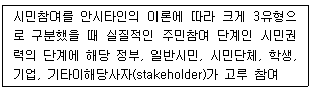
- 시민차지(citizen control)
- 파트너십(partnership)
- 상담자문(consultation)
- 조작(manipulation)
(정답률: 69%)
76. 조경공간에서 안전관리 상 관리하자에 의한 사고는?
- 유아가 보호책을 넘어간 사고
- 시설물 노후 파손에 의한 사고
- 이용자 자신의 부주의에 의한 사고
- 시설물 구조상 접속부에 손이 낀 사고
(정답률: 77%)
77. 설치비용은 비싸나 유지관리비가 저렴하며, 열효율이 높고, 투시성이 뛰어나 산악 도로나 터널 등에 가장 적합한 조명 램프는?
- 나트륨 램프
- 크세논 램프
- 수은 램프
- 형광 램프
(정답률: 67%)
78. 연평균 조경 작업자수가 10,000명인 어느 기업의 1년 동안의 작업 관련 재해 건수는 6건, 재해자 수는 12명, 총 근로손실일수는 30일로 나타났다. 이 기업의 지난 1년 동안의 연천인율은? (단, 하루 작업시간은 8시간, 한 달은 25일로 가정한다.)
- 0.25
- 0.50
- 0.60
- 1.20
(정답률: 37%)
79. 도시공원에서 이용자의 요망ㆍ에로사항을 시설요망, 관리, 공원녹지 주변 등으로 구분할 때 “관리에 관한 사항”에 해당하는 것은?
- 관람석 설치
- 수목 명찰
- 자동 판매기
- 연못 청소
(정답률: 73%)
80. 농약의 독성정도를 구분할 때 해당되지 않는 것은?
- 급독성
- 고독성
- 맹독성
- 저독성
(정답률: 66%)